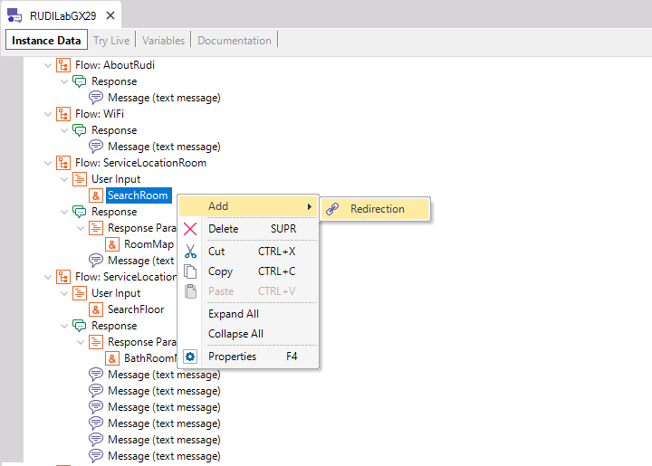

Conversational Flows Editor
With the Conversational Flows editor, you can model Conversational Flows to create a Chatbot. In the Editor pane, two modes of operation are available: Designer and Tree, which can be selected using the tabs at the bottom of the Editor.
This Editor is available since GeneXus 17. For more information, see Conversational Flows Designer. The Tree Editor is an advanced editor where you can edit the properties of each node using the Properties editor.
The way to add or remove different nodes (Messages, User Inputs, Redirections, etc.) is through the contextual menu of each node or its parent. 
|


| Backlinks | |
| Category property | Conversational Flows Designer |
| Multi-experience with GeneXus 17 | Response Name property (Conversational Flows) |